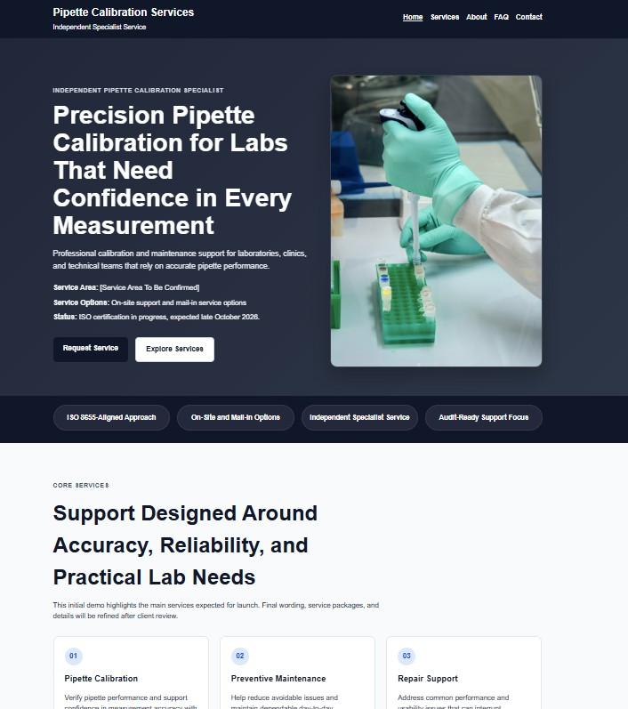
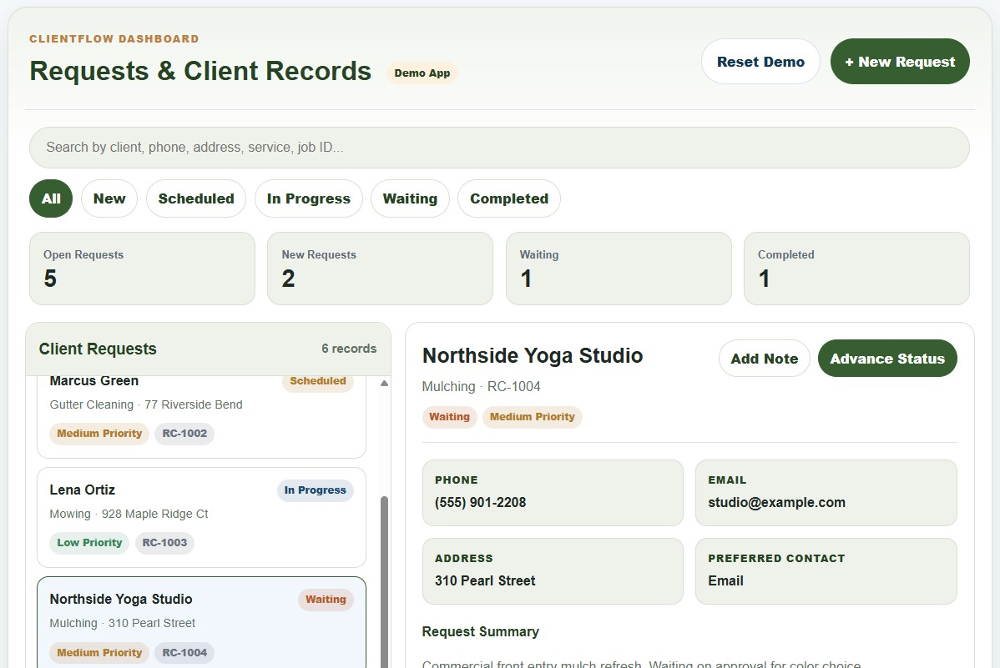
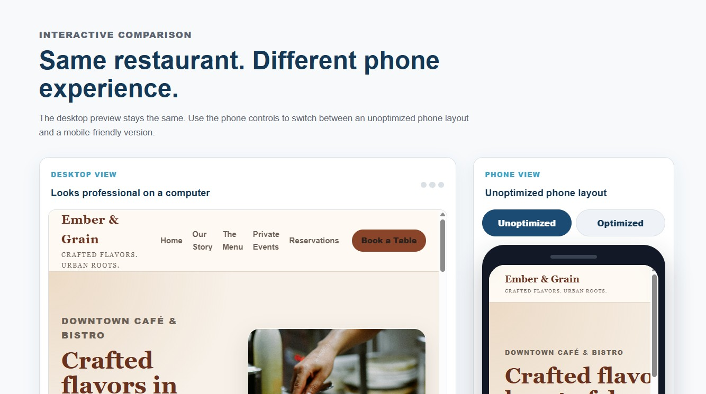

🌐
New Small Business Websites
Starting at $900
Professional websites for small businesses and nonprofits that need a credible online presence, clear service information, and easy ways for customers to get in touch.
Websites • Online Presence • Ongoing Support
Able Software & Web helps small businesses and nonprofits build, improve, and maintain mobile-friendly websites that support how customers actually find, trust, and contact them.
For some businesses, the website is the main sales tool. For others, it supports social media, referrals, Google searches, in-person traffic, events, or booking requests. The goal is not to build a website just to have one. The goal is to make your online presence easier to find, easier to trust, and easier to act on — especially for customers using a phone.
Starting at $900
Professional websites for small businesses and nonprofits that need a credible online presence, clear service information, and easy ways for customers to get in touch.
Starting at $500
Improvements for existing websites that look outdated, are hard to use on phones, or do not clearly guide visitors toward calling, booking, visiting, or contacting you.
Starting at $50 / month
Ongoing help after launch for updates, small content changes, basic monitoring, hosting support, and practical improvements as your business changes.
Project-based pricing
Once your web presence is in good shape, Able Software & Web can also help with workflow tools, forms, automation, and custom software built around your operations.
Final pricing depends on page count, content needs, features, timeline, and whether existing materials are ready to use.
A few examples of the kinds of websites, workflow tools, and practical software support Able Software & Web can provide.

Website Project
A professional website concept for a regional laboratory calibration business, focused on explaining services clearly, building trust, and giving customers a straightforward way to make contact.

Custom Web App
An interactive prototype showing how a small business could manage client requests, job details, follow-ups, notes, and custom workflow information in one place.

Interactive Demo
An interactive demo showing how the same business information can feel very different on a phone depending on layout, spacing, buttons, and contact flow.
Local, Practical, Direct
Able Software & Web is a small independent web and software business serving Southern Indiana, the Louisville area, and remote clients when the fit is right. The focus is on practical recommendations, clear communication, and websites that support how real customers find and contact local organizations.
Instead of pushing a one-size-fits-all package, I look at what you already have, what your customers need, and what would actually help your business or nonprofit move forward.
Learn More About AbleHow the Process Works
We look at what you have now: your website, social media, Google presence, customer contact paths, and what people experience on a phone.
You get a practical recommendation based on your goals, budget, timeline, and what would actually help customers find, trust, and contact you.
The project is built in clear stages with room for review, feedback, and adjustments before launch.
After the site goes live, ongoing care is available for updates, small changes, hosting support, monitoring, and future improvements.
Website Care & Ongoing Support
Many small business websites are launched once and then slowly become outdated. Services change, hours change, photos get old, links break, and small updates get pushed aside because no one has time to deal with them.
Able Software & Web offers ongoing website care so your site can stay useful, accurate, and professional after it goes live.
Ask About Website CarePlans start at $50 / month.
Care plans are optional, but recommended for businesses that want someone available for ongoing updates and practical support.
Free Initial Consultation
Not sure whether you need a new website, a mobile-friendly refresh, or better ongoing support? Start with a free initial consultation focused on understanding where your online presence stands now and what would help most.
Most inquiries receive a response within one business day.